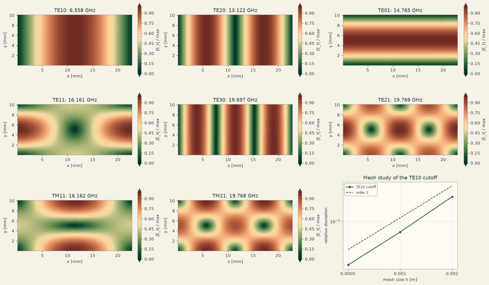
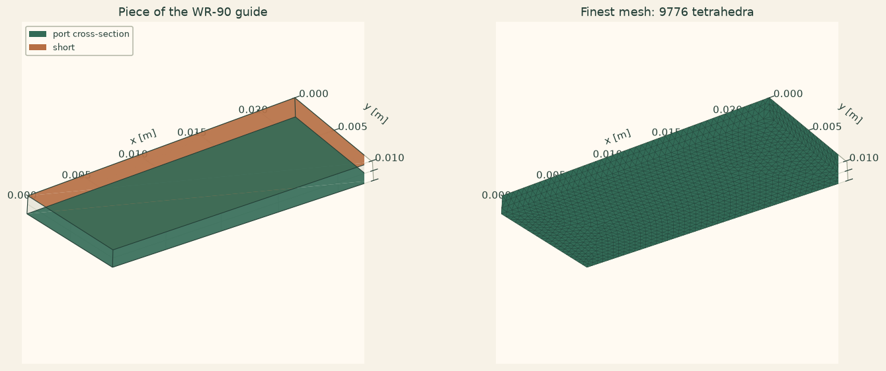

Docs › Examples › Mode analysis of a rectangular waveguide cross-section
Electromagnetic waves · 2D
Mode analysis of a rectangular waveguide cross-section
The first eight TE and TM modes of a WR-90 waveguide cross-section with their cutoff frequencies and field patterns.

What it computes
OneSimulation solves the transverse TE and TM eigenvalue problems on the meshed port cross-section of a short guide read from STEP and binds the requested mode by order; its cutoff frequency and transverse field are read from the bound port mode. A mesh study of the fundamental mode accompanies the eight patterns. The script that builds the STEP file comes with the notebook.
What it checks
All eight cutoffs match c/2 sqrt((m/a)^2+(n/b)^2) within 0.015 % (TE10, 6.5581 against 6.5571 GHz) to 0.15 % (TE21), the TE10 pattern follows sin(pi x/a) within 0.13 % of the peak, and the TE10 error falls at second order from 0.29 % to 0.015 % over three meshes.
Geometry
The notebook starts at the import of the CAD file waveguide_mode_analysis.step: STEP (AP242), readable by any CAD program, with the names of the faces that the boundary conditions use. Put it next to the notebook.

The geometry script
The script waveguide_mode_analysis_geometry.py builds the geometry with the CAD objects of OneSimulation and writes the file. Change a dimension there, run it, and run the notebook again.
"""Geometry of the OneSimulation example "Mode analysis of a rectangular waveguide cross-section".
Builds a short piece of the air volume of a WR-90 waveguide (inner cross-section 22.86 mm x
10.16 mm, 1.5 mm long) with the CAD objects of OneSimulation and writes
waveguide_mode_analysis.step. The file names three face groups: `port` (the cross-section at
z = 0 on which the modes are computed), `short` (the far end) and `walls` (the four side walls).
"""
from onesim.cad.d3 import Box
guide = Box(length=22.86e-3, width=10.16e-3, height=1.5e-3)
faces = guide.boundaries
guide = guide.grouped(
port=faces.z_min, short=faces.z_max, walls=faces.all - faces.z_min - faces.z_max
)
guide.save("waveguide_mode_analysis.step")The notebook
The complete notebook, cell by cell. Run it to produce the figures and the comparison printout.
A hollow metal waveguide carries transverse electric (TE) and transverse magnetic (TM) modes. Each mode has a pattern over the cross-section and a cutoff frequency below which it cannot propagate. Mode analysis is the 2D eigenvalue problem on the cross-section \(S\): for TE modes the axial magnetic field \(H_z\), for TM modes the axial electric field \(E_z\), satisfies
and the transverse electric field follows from the gradient of \(\psi\).
OneSimulation solves this eigenproblem with linear triangles on the port cross-section of a waveguide model: NumericalWaveguideMode("TE", order=n) binds the \(n\)-th TE eigenmode computed on the meshed port face. Here the face belongs to a 1.5 mm long piece of a WR-90 guide (inner size \(a\times b=22.86\times10.16\) mm, the standard X-band guide) read from the CAD file waveguide_mode_analysis.step, written by waveguide_mode_analysis_geometry.py with the CAD objects of OneSimulation. Each mode is bound in a driven solve at 25 GHz, above all cutoffs considered.
Reference (D. M. Pozar, Microwave Engineering, 4th ed., Wiley 2012, §3.3; R. E. Collin, Foundations for Microwave Engineering, 2nd ed., §3.12). For the TE\(_{mn}\) and TM\(_{mn}\) modes
with \(m,n\ge0\), not both zero, for TE and \(m,n\ge1\) for TM. In WR-90 the TE\(_{10}\) mode propagates alone between 6.56 and 13.12 GHz.
import numpy as np
from onesim.cad.exchange import load
from onesim.materials import VACUUM_PERMEABILITY, VACUUM_PERMITTIVITY
from onesim.materials.electromagnetic import IsotropicElectromagneticMaterial
from onesim.meshing import TetrahedralMesher
from onesim.numerics import Numerics
from onesim.numerics.fem import FiniteElement, Nedelec
from onesim.numerics.linear import ComplexSparseDirect
from onesim.physics.electromagnetics import (
FrequencyDomainMaxwell,
NumericalWaveguideMode,
PerfectElectricConductor,
WaveguidePort,
)
from onesim.results.comparisons import convergence
from onesim.simulation import Problem, Simulation
from onesim.visualization import plots, theme
theme.set()Geometry and mesh
The mode solve uses the triangles of the port face. Three meshes are built for the mesh study; the finest, 0.5 mm, resolves the eighth mode with about eleven triangles per half wavelength.
guide = load("waveguide_mode_analysis.step")
faces = guide.boundaries
a, b, length = guide.size
sizes = (2.0e-3, 1.0e-3, 0.5e-3)
meshes = {size: TetrahedralMesher(target_size=size).generate(guide) for size in sizes}
fig = plots.figure(1, 2, size=(13, 5))
plots.geometry(
guide,
selection={"port cross-section": faces.port, "short": faces.short},
labels=False,
camera=plots.Camera(elevation=-30, azimuth=-55),
title="Piece of the WR-90 guide",
ax=fig[0],
)
plots.mesh(
meshes[sizes[-1]],
groups=("all",),
legend=False,
camera=plots.Camera(elevation=-30, azimuth=-55),
title=f"Finest mesh: {meshes[sizes[-1]].cell_count} tetrahedra",
ax=fig[1],
)
plots.show()Model
One driven solve per requested mode; only its port eigenmode is used here. The bound mode exposes its cutoff frequency and its transverse electric field on the cross-section.
frequency = 25e9
model = FrequencyDomainMaxwell(
domain=guide.volume,
frequency=frequency,
material=IsotropicElectromagneticMaterial(),
phasor_convention="exp(-i*omega*t)",
amplitude_convention="peak",
)
numerics = Numerics(
spatial=FiniteElement(element=Nedelec(order=1)), linear_solver=ComplexSparseDirect()
)
port_mode = (
lambda family, order, mesh: Simulation(
problem=Problem(
name="WR-90 port",
geometry=guide,
physics=(model,),
boundary_conditions=(
WaveguidePort(
boundary=faces.port,
physics=model,
mode=NumericalWaveguideMode(family, order=order),
incident_power=1.0,
),
PerfectElectricConductor(
boundary=faces.walls | faces.short, physics=model
),
),
),
mesh=mesh,
numerics=numerics,
)
.solve_stationary()
.operators[model.model_id]
.ports[0][1]
)
requested = {
"TE10": ("TE", 1),
"TE20": ("TE", 2),
"TE01": ("TE", 3),
"TE11": ("TE", 4),
"TE30": ("TE", 5),
"TE21": ("TE", 6),
"TM11": ("TM", 1),
"TM21": ("TM", 2),
}
modes = {
name: port_mode(family, order, meshes[sizes[-1]])
for name, (family, order) in requested.items()
}
fundamental = [
port_mode("TE", 1, meshes[size]).cutoff_frequency for size in sizes[:-1]
] + [modes["TE10"].cutoff_frequency]Comparison with the closed forms
c0 = 1 / np.sqrt(VACUUM_PERMEABILITY * VACUUM_PERMITTIVITY)
cutoff = lambda m, n: c0 / 2 * np.hypot(m / a, n / b)
print("mode computed [GHz] closed form [GHz] deviation")
for name, mode in modes.items():
exact = cutoff(int(name[2]), int(name[3]))
print(
f"{name:6s} {mode.cutoff_frequency / 1e9:15.4f} {exact / 1e9:19.4f} {100 * (mode.cutoff_frequency / exact - 1):+10.3f} %"
)
errors = [abs(value / cutoff(1, 0) - 1) for value in fundamental]
study = convergence(fundamental, sizes)
print(
"TE10 mesh study: "
+ ", ".join(
f"h = {1e3 * h:.1f} mm: {100 * error:.4f} %" for h, error in zip(sizes, errors)
)
+ f"; observed order {study.order:.2f}"
)
x = np.linspace(0.02 * a, 0.98 * a, 25)
profile = modes["TE10"].electric_field(
np.column_stack((x, np.full_like(x, b / 2), np.zeros_like(x)))
)
shape = np.abs(profile[:, 1]) / np.abs(profile[:, 1]).max()
print(
f"TE10 pattern against sin(pi x / a): largest deviation {np.abs(shape - np.sin(np.pi * x / a)).max():.4f} of the peak"
)Figure
The transverse electric field strength of the eight modes on the cross-section, each scaled to its maximum, and the mesh study of the fundamental cutoff.
gx, gy = np.linspace(0.002 * a, 0.998 * a, 91), np.linspace(0.002 * b, 0.998 * b, 41)
grid = np.column_stack(
[value.ravel() for value in np.meshgrid(gx, gy, indexing="ij")]
+ [np.zeros(gx.size * gy.size)]
)
strength = {
name: np.linalg.norm(mode.electric_field(grid), axis=1).reshape(gx.size, gy.size)
for name, mode in modes.items()
}
fig = plots.figure(3, 3, size=(16, 9.5))
for index, (name, values) in enumerate(strength.items()):
plots.heatmap(
1e3 * gx,
1e3 * gy,
values / values.max(),
limits=(0, 1),
label="|E_t| / max",
xlabel="x [mm]",
ylabel="y [mm]",
title=f"{name}: {modes[name].cutoff_frequency / 1e9:.3f} GHz",
ax=fig[index],
)
plots.convergence(
list(sizes),
{"TE10 cutoff": errors},
order=2,
xlabel="mesh size h [m]",
ylabel="relative deviation",
title="Mesh study of the TE10 cutoff",
ax=fig[8],
)
plots.show()Going further
Change the cross-section in waveguide_mode_analysis_geometry.py (for example WR-75 with 19.05 x 9.525 mm) and write the STEP file again, or replace the box by a ridged or elliptical profile, for which no closed form exists: the numerical port mode is computed the same way and feeds the 3D field of a longer guide directly.